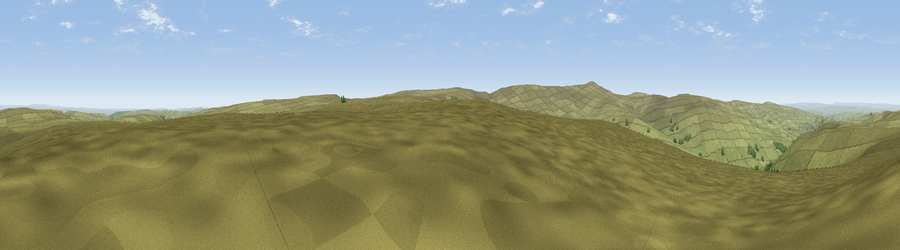

Viewpoint near Allenheads
#10435 in England · top 28% of its area beats it · near AllenheadsThe view, rendered

A 360° render of this exact spot computed from the terrain model, tree cover and land cover — summer colours, afternoon light, calibrated against photographs of famous viewpoints. Real trees, hedges and buildings will differ in detail.
The panorama
Grey silhouette: terrain skyline in each direction (720 bearings, Earth curvature and refraction included). Dashed green: skyline with trees (+15 m) and buildings (+8 m) as obstacles. Blue strip: how far the ground is visible on each bearing.
Where the view opens
Wedge length = distance to the farthest visible ground on that bearing (vegetation-aware). Rings at 10, 25 and 50 km.
What fills the view
98% grassland · 2% woodland
Angular shares of the visible panorama (visual magnitude), not map area. Landscape diversity 0.05 (0–1 Shannon).
Key numbers
More beautiful places nearby
The staircase of upgrades: each row has a higher view potential than everything closer. Driving times are estimates from straight-line distance, calibrated against real road routing — check an actual route before setting out.
| Place | Direction | Drive | Score |
|---|---|---|---|
| Viewpoint near Allendale | N · 4 km | ~9 min | 66.1 |
| Viewpoint near Allenheads | SSW · 5 km | ~11 min | 67.6 |
| Viewpoint near Allenheads | W · 5 km | ~11 min | 69.8 |
| Viewpoint near Allenheads | SW · 5 km | ~12 min | 74.6 |
| Grey Nag | W · 20 km | ~34 min | 75.7 |
| Little Dun Fell | SW · 22 km | ~36 min | 78.4 |
| Cross Fell | SW · 22 km | ~37 min | 78.7 |
| Viewpoint near Cumrew | W · 31 km | ~48 min | 78.8 |
54.82508, -2.21126 · source: screening · position refined by local search. Computed location — check access rights before visiting.